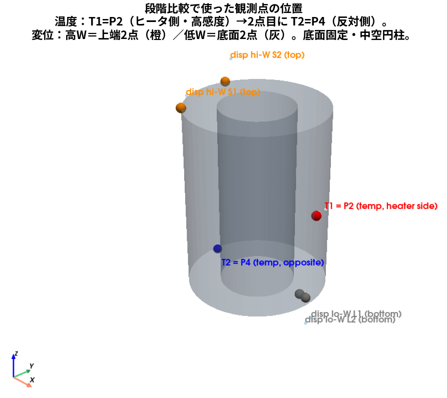
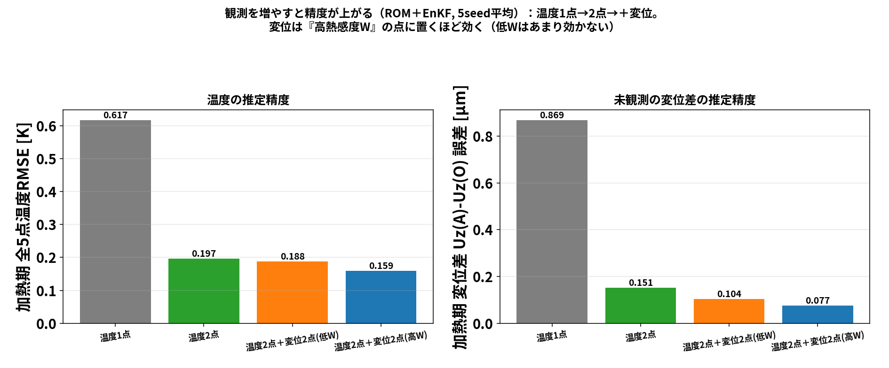
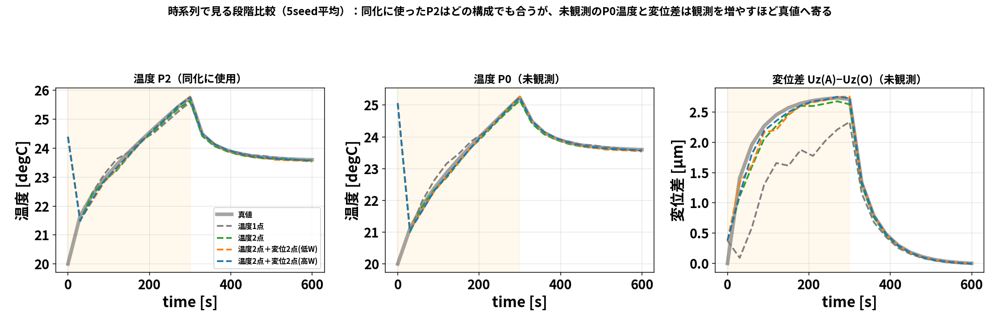
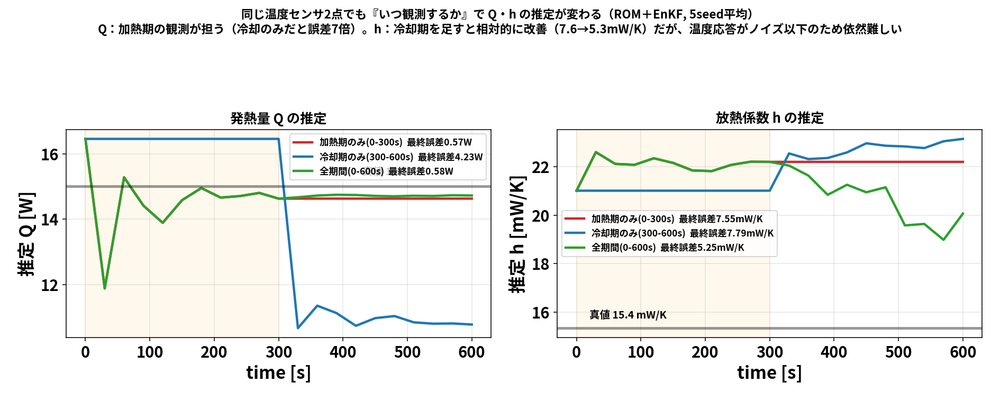

第3回は アンサンブルカルマンフィルタ（EnKF） です。前回（blog_002）の OI は 背景共分散 \(B\) を 決め打ちで固定しました。EnKF はここを変えて、
たくさんの”分身（アンサンブル）“を走らせ、その散らばりから共分散を毎回作り直す
のが特徴です。これで 発熱量 \(Q\) のような未知パラメータまで当てられるようになります。 今回も 節点を減らした具体例で、行列を手で追いながら理解します。
OIとの一言の違い：OI は \(B\) を人間が置く／EnKF は \(B\) を分身の散らばりが教えてくれる。
「予報がどれくらい外れるか（共分散 \(B\) ）」を人間が決めるのは難しい。 そこで EnKF は、少しずつ違う初期値・パラメータを持った \(N\) 個の分身を用意して、 全部シミュレーションで前進させます。その バラけ方（散らばり）そのものが共分散になります。
分身1 ─┐
分身2 ─┼─ みんな少しずつ違う → シミュレーションで前進
⋮ │ → 散らばり方から共分散 C を作る
分身N ─┘この共分散は状況に応じて毎サイクル作り直される（＝流れ依存）。ここが固定 \(B\) の OI との決定的な差です。
\[x_a^{(m)}=x_f^{(m)}+K\bigl(y+\epsilon^{(m)}-Hx_f^{(m)}\bigr)\qquad(m=1,\ldots,N)\]
更新後の分身の 平均が推定値、散らばりが不確かさです。
状態を2点の温度 \(x=(T_1,T_2)\) とし、分身を 4つ用意して前進させたら、次の予報になったとします。
| 分身 | \(T_1\) | \(T_2\) |
|---|---|---|
| m1 | 26 | 24 |
| m2 | 30 | 27 |
| m3 | 28 | 25 |
| m4 | 32 | 28 |
| 平均 | 29 | 26 |
平均からのズレ（deviation）:
| 分身 | \(\delta T_1\) | \(\delta T_2\) |
|---|---|---|
| m1 | −3 | −2 |
| m2 | +1 | +1 |
| m3 | −1 | −1 |
| m4 | +3 | +2 |
標本共分散は \(C=\dfrac{1}{N-1}\sum_m \delta x^{(m)}\,\delta x^{(m)\mathsf T}\) （ \(N=4\) なので \(1/3\) ）:
\[C=\frac{1}{3}\begin{pmatrix}(-3)^2+1^2+(-1)^2+3^2 & (-3)(-2)+\cdots+3\cdot2\\ 14 & (-2)^2+1^2+(-1)^2+2^2\end{pmatrix} =\frac{1}{3}\begin{pmatrix}20 & 14\\ 14 & 10\end{pmatrix} =\begin{pmatrix}6.67 & 4.67\\ 4.67 & 3.33\end{pmatrix}\]
読み方： \(C_{12}=4.67>0\) 、つまり 「 \(T_1\) が高い分身は \(T_2\) も高い」と分身たちが教えている。 この相関は人間が置いたのではなく、シミュレーションの結果から自動で出てきたものです。
点1を観測（ \(H=(1,\ 0)\) ）、観測ノイズ \(R=0.3^2=0.09\) 。
\[K=\frac{1}{C_{yy}+R}\begin{pmatrix}6.67\\ 4.67\end{pmatrix} =\frac{1}{6.76}\begin{pmatrix}6.67\\ 4.67\end{pmatrix} =\begin{pmatrix}0.987\\ 0.691\end{pmatrix}\]
観測 \(y=30\) （真値 \(T_1=30\) 付近）。予報平均のハズレは \(30-29=1\) 。平均の更新は
\[\bar x_a=\bar x_f+K\times1 =\begin{pmatrix}29\\ 26\end{pmatrix}+\begin{pmatrix}0.987\\ 0.691\end{pmatrix} =\begin{pmatrix}29.99\\ 26.69\end{pmatrix}\]
| 点 | 予報平均 | 同化後平均 | 真値 |
|---|---|---|---|
| 点1（観測） | 29 | 29.99 | 30 |
| 点2（未観測） | 26 | 26.69 | 27 |
観測した点1はほぼ真値へ、未観測の点2も標本共分散の相関を通じて真値へ寄りました。 やっていることは OI と同じ更新式ですが、共分散 \(C\) を分身から作ったのが違いです。 さらに更新後は 分身の散らばりが縮む（不確かさが減った、を表す）。
OI（blog_002）では、固定 \(B\) のもとで 発熱量 \(Q\) が真値に届きにくいという弱点がありました （ \(\sigma_Q\) を100倍振っても \(Q\) は約9 Wで頭打ち）。EnKF はここで差が出ます。
EnKF では状態に \(Q\) も入れて 拡大状態 \(z=(T_1,\ldots,Q,\ h)\) にします。分身ごとに \(Q\) を少し変えて前進させると、
だから観測の予測外れを \(Q\) にも正しく配分でき、 \(Q\) が真値へ寄ります。 本研究の実ソルバEnKFでは、でたらめ初期から
まで当てられました（OIの約9 Wと対照的）。下の図は ROM 版 EnKF での \(Q,h\) 推定の収束です。
発熱量 \(Q\) が真値へ収束していく様子（ \(h\) は主に冷却期に効くため収束はゆるやか）。

同化を重ねるごとに全点温度RMSEが下がる。
EnKF の弱点は 重さです。共分散を作るために 分身を \(N\) 個、毎サイクル全部前進させます。 実ソルバ（OpenFOAM＋FrontISTR）でこれをやると、
となります。「軽いが \(B\) が硬い OI」対「重いが \(Q\) まで当たる EnKF」というトレードオフです。 この重さを避けるために 予報モデルを ROM に置き換えるのが、106 の POD+Q-DEIM の役割でした （0〜600秒が数秒で回るので、EnKF を何度も試せる）。
軽いROMの上でEnKFを何度も回せるようになったので、観測設計の実験を2つ紹介します。
まず どこで観測しているか（この種の図はDA結果とセットで必ず示します）:

温度は T1=P2（ヒータ側・高感度）、2点目に T2=P4（反対側）。変位は高W＝上端2点（橙）／低W＝底面2点（灰）。底面固定の中空円柱。

ROM＋EnKF・5seed平均。温度1点→2点で大きく改善し、変位2点を足すとさらに改善。 そして同じ変位2点でも、熱感度 \(W\) の高い点に置いた方が効く（低Wだと効きが半減）。
時系列でも見てみます（同化に使った点と未観測点を分けて）:

左＝同化に使った P2：どの構成でも真値に合う。中＝未観測の P0：温度1点（灰）は加熱期にずれる。 右＝未観測の変位差 Uz(A)−Uz(O)：温度1点は大きく外れ、観測を増やすほど真値へ。同化に使った点が合うのは当然で、未観測の量で比べるのが公平です。
| 観測構成 | 温度RMSE（加熱期） | 未観測の変位差誤差 |
|---|---|---|
| 温度1点 | 0.617 K | 0.869 µm |
| 温度2点 | 0.197 K | 0.151 µm |
| 温度2点＋変位2点（低W） | 0.188 K | 0.104 µm |
| 温度2点＋変位2点（高W） | 0.159 K | 0.077 µm |
観測の効き目は場所だけでなく時間にもあります。同じ温度2点で、同化する時間窓だけを変えると:

直接感度 \(\partial T/\partial Q\) は加熱期に大きく、 \(\partial T/\partial h\) は冷却期に大きい。実験でも \(Q\) は加熱期の観測が担い（加熱のみ0.57 W ≈ 全期間0.58 W、冷却のみだと4.23 Wと7倍悪化）、 \(h\) は冷却期を足すと相対的に改善（7.6→5.3 mW/K）。ただし \(h\) は温度応答がノイズ以下のため依然難しい。
まとめると、観測設計は「どこで（空間）・何を（種類）・いつ（時間）」の3軸で考える、というのが実験から見えた形です。
| 回 | テーマ | キモ |
|---|---|---|
| blog_001 | CHT→熱膨張＋熱伝達率 | 固体＋空気を一体で解き、温度→変形、面ごとの \(h\) を診断 |
| blog_002 | OI データ同化 | 感度で観測点を選ぶ／固定 \(B\) で軽く更新／ \(Q\) は弱可同定 |
| blog_003 | EnKF | 分身の散らばりから共分散を作り、 \(Q\) まで同定／ただし重い |
3つを貫くメッセージは、「少数の観測から全体（温度・変形・熱源）を推定する」 こと。 そのために どこを測るか（感度）・どう共分散を作るか（固定 \(B\) か分身か）・どう軽くするか（ROM） を 使い分ける、というのが本研究の骨格です。
00_data_assimilation_algorithm.md00_data_assimilation_algorithm.md
の E 節02_full_story.md